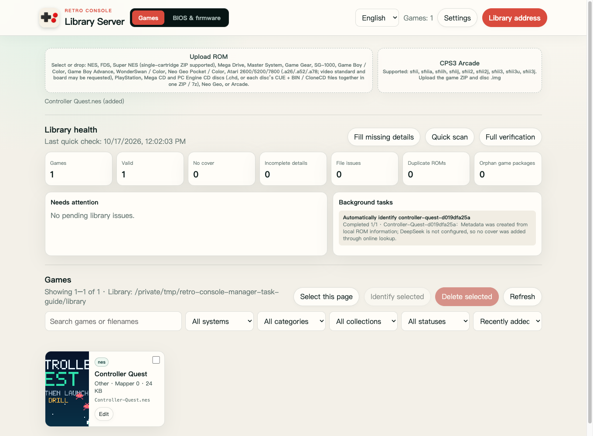

WINDOWS · MACOS · LINUX · SYNOLOGY
Your library.
Your own hardware.
Retro Console Library Server organizes ROMs, game details, cover art, saves, and collections, and serves your own remote library to Android TV, Apple TV, and macOS.

Library server management page
INSTALLATION
On a computer,
set up in four steps.
- 01
Install Docker
Install Docker Desktop on Windows or macOS, or Docker Engine with the Compose plugin on Linux.
- 02
Extract the ZIP and choose a library
Download and extract the ZIP, then create a
libraryfolder inside it. To use an existing library, follow the README and set its path in.env. - 03
Start the server
Open a terminal in the extracted folder and run
docker compose up -d --build. Then openhttp://127.0.0.1:8282/in your browser. - 04
Allow access from your TV
Set a management token first, then change
FC_LIBRARY_BIND_IPto your computer’s local network IP. Do not forward the port to the internet.
SYNOLOGY DSM 7
Install a native SPK
on Synology.
- 01
Install Node.js 18, 20, or 22 in Package Center.
- 02
Choose Manual Install and select the SPK downloaded from this page.
- 03
Give the internal system user
FCEmulatorLibraryread/write permission for your library folder. - 04
Start the package, then open
http://NAS_IP:8282/to finish setup. Replace NAS_IP with your NAS’s local network address.
YOUR FILES, YOUR CONTROL
Bring your own
games and BIOS files.
The Docker ZIP and Synology SPK contain no ROMs, CPS2 keys, or neogeo.zip BIOS. CPS2 games need a matching .key in your own ROM ZIP. For Neo Geo, upload your own neogeo.zip on the management page.
The Docker package binds to localhost by default and runs as a non-root user with a read-only root filesystem. ROMs, cover art, and library indexes are written only to directories you mount or grant access to. Only use content you have the right to use.